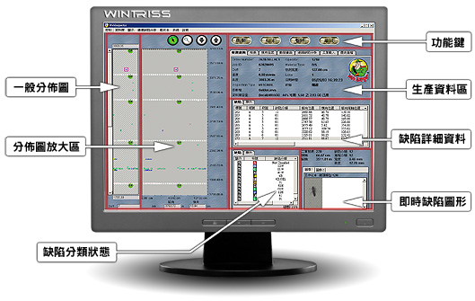
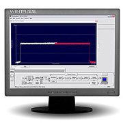
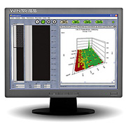
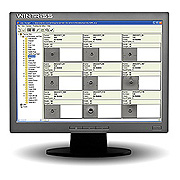
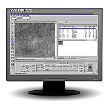
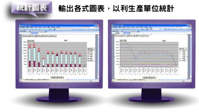

檢查功能資料統計功能
- 產品百分之百檢測，正確提供缺陷各項參數(位置、面積、寬度、長度、發生時間、影像畫面)
- 進階分類功能正確顯示出缺陷型態，能依缺陷不同型態正確分類
- 可依線速度不同改變掃瞄頻率，確保缺陷不變形，系統不超載
- 可利用軟體介面任意設定 I/O (如換捲訊號、警告燈號等..)
- 全中文操作介面(可中英切換)
歷史資料查詢
- 報表列印功能(可依需求自由選擇列印) 可單獨每支或每批列印或自動列印
- 每支缺陷統計曲線
- 連續缺陷趨勢分析
- 可統計每支缺陷且自動標註記錄
- 可統計每固定區段(可設定)缺陷且自動標註記錄
- X-Y 軸缺陷分布圖
- 使用者可自行設定缺陷扣分標準
- 來做為產品等級分類．影像資料庫(異常點圖形)
- 可利用 Microsoft 的軟體進入 SQL Database 做資料查詢及列印
- 利用歷史資料作模擬檢測程序
- 以遠端電腦查詢資料庫不影響正常檢測
- 利用歷史資料作缺陷影像分析及單獨列印
- 可利用歷史缺陷影像資料作進階分類
系統主畫面部分的系統必須使用實際影像作為設定調整的參考，這樣的作法無法真實反應攝影機的感度，有無校正水平、觀測點是否正確都必須透過左邊的波型進行校正，無論使用幾部攝影機，都可以在同一個畫面做調整，確保檢測條件一致。左圖就是兩部攝影機，當校正完成後，代表所有檢測條件一致，攝影機的交疊區(OVERLAP)也是透過這個波形進行調整，我們可以保證攝影機之間有交疊區，亦保證交疊區的缺陷不會被重複檢出。
本系統擁有均勻度分析功能，使用透射光的系統都可以輕易的啟動這一個功能，依據透光的程度，系統將自動運算灰階變化程度並直接將其轉換為 3D 圖表，並可以讓使用者設定警告值，當某區域均勻度超過設定值時系統會自動警報。
進階分類軟體利用缺陷 64 種特徵值，包括長寬比例、灰階、形狀、面積、特徵及填滿率等等條件限制，讓系統學習並完成分類(選配)。
系統的控制由兩套軟體組成，其中的一套就是畫面中的攝影機參數修正軟體。整套系統所有的參數都必須在這套軟體修正並儲存，需受過專業訓練的工程師才能調整這套軟體。
任何數量的實體攝影機都在這一個軟體內被整合成一部虛擬攝影機。所有的參數只需設定一次，所有的攝影機就會使用同一個參數執行檢測，並將在收到指令後執行自動校正及檢測。
由於 Wintriss 檢測系統的資料庫存取是使用 Microsoft SQL Server，所以匯出的資料支援 Excel，讓分析人員可以更清楚的了解產品良率。
